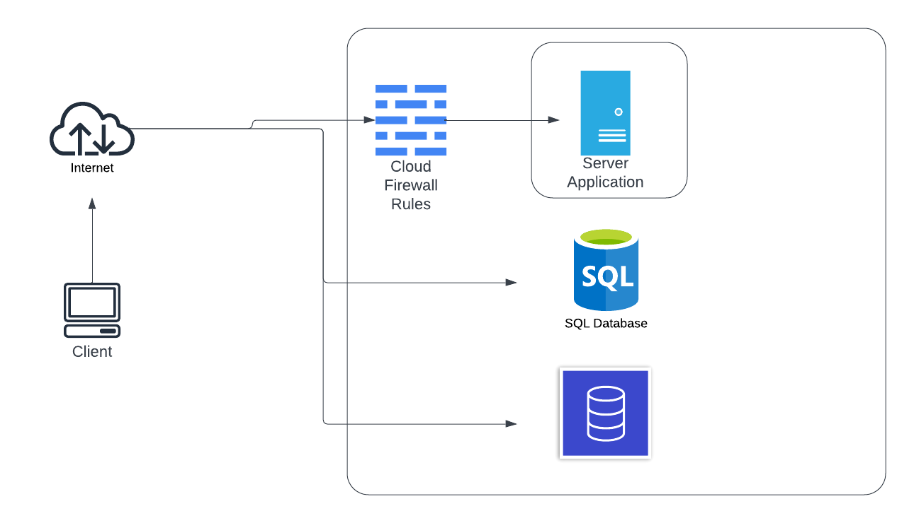

We decided to go with a cloud service provider to hosr our server side application and give a cloud infrastructure. We chose to go with DigitalOcean as the GitHub Student Developer Pack gives $200 in credits to use for a year. This gave us more than enough to acquire a droplet(VM) and managed databases for storage.
For the development of the project, we decided to make it easier to access the databases. To help with this, we allowed the databases to be public facing to allow all outside connections. This lets us easily configure the databases and do all necessary setup easily without connecting to the server VM first.
The following diagram show the cloud environment setup for the development: 
For the deployment of the project, we move the databases into a Virual Private Cloud(VPC) to segment them from internet. This allows only the server VM to connect to the databases and not outside connections. Doing this secures the connection between the server and databases since it is over an internal network.
The following diagram show the cloud environment setup for the deployment:
To secure the cloud VM certain firewall rules were set. We are using the TCP protocol over port 8080 to communicate from the client to the server. To make sure only necessary connections are allowed, the following firewall rules were put in place:
Inbound: - TCP on port 8080 - SSH on port 22
Outbound: - TCP on port 8080 - TCP on port 25060(MySQL) - TCP on port 27017(MongoDB)
This setup allows for load balancing to distribute server connections to different process in the VM. We have implemented this Load Balancer at the VM level to distribute to different proccesses running on the VM. This can also be done at the network level to distribute the requests out to multiple VM’s.
We chose to go with Nginx as our Load Balancing software as it is highly efficient and can handle large numbers of concurrent connections, allowing for ease of scaling. Nginx supports many different load balancing algorithms, and can distribute to multiple backend servers as once allowing for more flexibility and scaling. This Load Balancing software is wildly used and has a reputation for being stable under heavy loads.
Nginx also supports health checks allowing for automatic detection and removal of unhealthy servers. These constraints vary, but make sure Nginx doesn’t send a client to a server that is not in a healthy state or accepting connections.
Nginx also gives the ability to be used as a Reverse Proxy which gives the benefits of things such as caching and URL rewriting.
Our Nginx setup accepts connects on the port 8080. This is the port used by the client to make connections to the server. This port 8080 will take in all incoming connections from the client to the servers.
To handle the distribution of the clients to the different servers, we spawn multiple instances of our server process. This is done using a script or manually doing the following:
./server 8081 &
./server 8082 &
./server 8083 &To point the incoming connections on port 8080 to the server process, we create an upstream for the servers in the config. This setup uses “least_conn” to distribute the connections to the servers with the least amount of connections. These upstream servers are the server proccesses spawned earlier. The format for each server is “server {IP}:{PORT}” as shown below.:
stream {
upstream c_servers {
least_conn;
server localhost:8081
server localhost:8082
server localhost:8083
etc.
}
server {
listen 8080;
proxy_pass c_servers;
}
}We use the “localhost” as the IP since we are doing this setup all in one VM. If this was distributing to other VM’s, then you would those IP addresses instead. The ports should be the same one’s you used to start the server processes to make sure all of those server processes get a connection.
Nginx comes with built-in health checks that allow for extra precautions during the connection distribution process. These are passive health checks to limit connections, timeouts, max fails allowed, etc. These health checks allow Nginx to see if one of our server processes is not working correctly, and will redirect the client to a health server process. The following is the setup we have used for our health checks:
upstream c_servers {
least_conn;
server localhost:8081 max_conns=100 fail_timeout=30s max_fails=3 weight=1;
server localhost:8082 max_conns=100 fail_timeout=30s max_fails=3 weight=1;
server localhost:8083 max_conns=100 fail_timeout=30s max_fails=3 weight=1;
}
This setup can also be deployed locally for testing or other purpose. To setup locally, you will need a local MySQL database and MongoDB database. You will also need to change the connection strings in the server.c code to make sure they connect to the local databases.
Next you can recompile the server code and run it:
./comp.sh
./serverThe connection string for the client needs to be changed from the server IP used to the local IP ‘127.0.0.1’ for local usage. THen the client can be recompiled and ran:
./comp.sh
./client